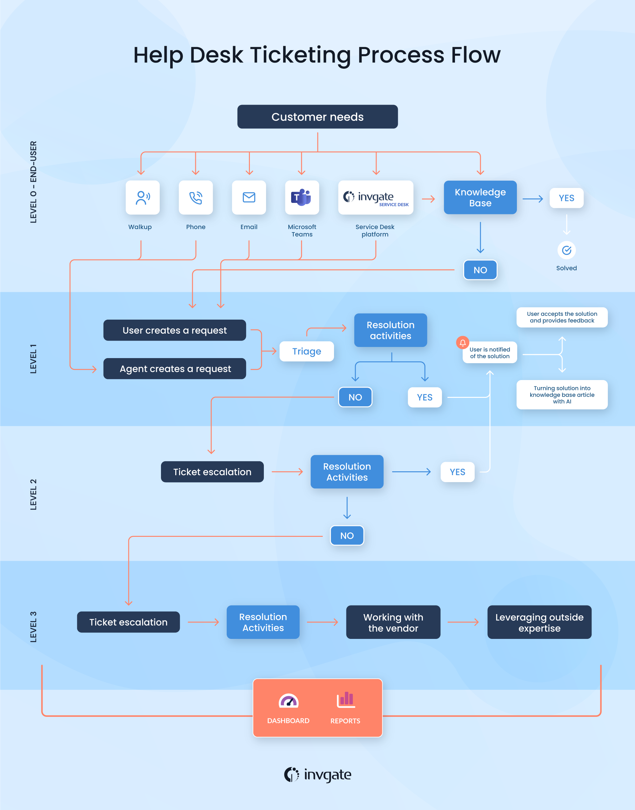

🛠️ Troubleshooting & Help Desk Practices
Ticketing systems, documentation, information gathering, and prioritization define how IT support works in the real world. These practices are essential for CCST exams, entry-level IT roles, and daily operations in networks using Cisco Systems equipment.
🎫 1️⃣ Ticketing Systems


📌 What Is a Ticketing System?
A ticketing system is software used to log, track, assign, and resolve user issues.
Every problem = One ticket
🔁 Ticket Lifecycle (Step-by-Step)
- User reports issue
- Ticket is created
- Issue is categorized
- Priority is assigned
- Technician works on it
- Issue resolved
- Ticket closed
🧪 Real-World Example
User: Internet not working
Ticket ID: 10234
Issue: No Internet
Priority: High
Assigned to: Network Team
- Ensures nothing is forgotten
- Provides tracking and accountability
🧠 Popular Ticketing Tools
- ServiceNow
- Jira Service Management
- Freshdesk, Zendesk
Ticketing systems improve organization and response time
🗂️ 2️⃣ Documentation

📌 What Is Documentation?
Documentation is written information that explains:
- Network setup
- Device configurations
- Troubleshooting steps
- Past issues and fixes
“What is built, how it works, and how to fix it”
🧠 Types of IT Documentation
- Network Documentation: IPs, VLANs, device names
- Configuration Docs: Router & switch configs
- Troubleshooting Logs: Issues & solutions
🧪 Example
- ❌ No documentation → Confusion & downtime
- ✔ Proper documentation → Faster fixes
Good documentation saves hours of troubleshooting
🕵️ 3️⃣ Information Gathering


📌 What Is Information Gathering?
Before fixing any issue, the help desk must clearly understand the problem.
Wrong information → Wrong fix
🔍 Key Questions to Ask
- What exactly is the problem?
- When did it start?
- Who is affected?
- Is it intermittent or constant?
- Any recent changes?
🧪 Example Scenario
User says: "Network is down"
After analysis:
✔ Only one PC affected
✔ Started after password change
Actual issue:
Wrong IP or gateway
🧠 Tools Used
- Ping
- IP configuration
- LED indicators
- System logs
Always gather information before troubleshooting
🚦 4️⃣ Prioritization

📌 What Is Prioritization?
Prioritization decides which issue must be fixed first. Not all problems are equal.
🚨 Priority Levels
| Priority | Description | Example |
|---|---|---|
| 🔴 Critical | Business stopped | Server down |
| 🟠 High | Many users affected | Network outage |
| 🟡 Medium | Some users affected | Printer issue |
| 🟢 Low | Minor issue | Wallpaper change |
🧪 Real-World Example
- ❌ Fixing mouse issue while server is down
- ✔ Fix server first → Correct prioritization
Impact + Urgency = Priority
🔄 How All Four Work Together

- Ticket created
- Information gathered
- Priority assigned
- Issue resolved
- Solution documented
- ✔ Smooth IT operations
- ✔ Faster resolution
- ✔ Happy users